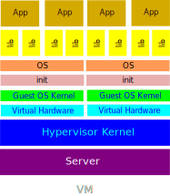
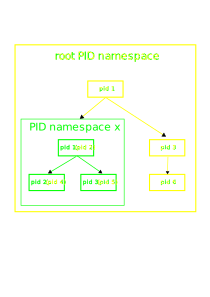
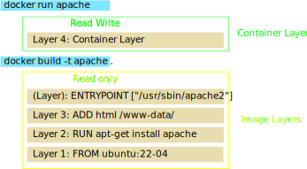
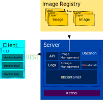

Linux Container
Hypervisor vs Container

Vorteile Container
Kernel-Update für alle Subsysteme
Elastizität/Skalierung
Ressourcenverwaltung/-limitation
Geschwindigkeit
Isolation
run everywhere/anything
Use Cases
Continuous Integration / Continuous Deployment
Konsistente Umgebungen
Dependency Hölle auf OS-Ebene verlassen
Anzahl VMs reduzieren
Günstigeres/effektiveres Hosting
Schnelle Skalierung
Einfachere Integrationstests
Ähnliche Systeme
BSD Jails (2000)
Solaris Zones (2004)
AIX Workload Partitions (2008)
Linux VServer (2001)
OpenVZ - Virtuozzo (2005)
Windows Container (2016)
Historie Linux Container (1)
1979 Unix V7 - chroot system call
1982 BSD - chroot als Befehl
2000 BSD Jails
2002 Namespaces in Plan 9
2002 Linux Mount Namespace
Building Block - Namespaces
Isolationlayer im Kernel
regelt Sichtbarkeit von Kernel-Ressourcen
1-n Prozesse pro Namespace
jeder Prozess ist in einem Namespace
keine Namen je Namespace, sondern INodes
Namespace Typen
Mount Namespace (2002 Kernel 2.4.19)
UTS Namespace (2006 Kernel 2.6.19)
IPC Namespace (2006 Kernel 2.6.19)
PID Namespace (2008 Kernel 2.6.24)
Network Namespace (2009 Kernel 2.6.29)
User Namespace (2008-2013 Kernel 3.8)
CGroups Namespace (2016 Kernel 4.6)
Time Namespace (2020 Kernel 5.6 )
Mount namespace
deluxe chroot()
jeder neue Mount NS erbt alle Mounts des Parent NS
jeder Mount NS kann sein eigenes RootFS haben
gemountete Dateisysteme sind nur im gleichen NS sichtbar
Achtung: Besonderheit spezielle Dateisysteme
Mount Namespace - Beispiel

UTS Namespace
eigener Hostname
eigener Domainname
UTS, da nodename und domainname Teil der utsname Datenstrutur
relevant bei uname() system call
nützlich für die Frage: wo bin ich?
IPC Namespace
eigene IPC Semaphoren
eigene IPC Message Queues
eigenes IPC Shared Memory
Vermeidung von Konflikten der Nutzer
PID Namespace
je NS eigener Prozessbaum mit eigener Nummerierung
Besonderheit PID 1
Prozesse sieht eigenen Prozessbaum oder den abgeleiteter NS
PID NS können geschachtelt werden
ein Prozess kann verschiedene PIDs je nach NS haben
keine Sicht auf Parent- oder Geschwister-NS
PID Namespace - Beispiel

Network Namespace
eigener Network Stack je Namespace
Network Interfaces (auch lo/127.0.0.1)
IP Adressen, Routing Tables, iptables Rules, Sockets, /proc/net
Netzwerk Interfaces lassen sich zwischen Namespaces verschieben
ip link set dev eth0 netns PID
Network Namespace - Beispiel

User Namespace
Isolierung von Benutzern und Gruppen
Mapping von UID/GID (auch Ranges) per NS
im neuen NS Root, im Host NS Non-Root
/proc/PID/uid_map und /proc/PID/gid_map
hierarchisch (Einfluss auf Capabilities)
nicht mit anderen Host-NS kombinieren
Sicherheitsverbesserung
UID 0 → 1999 in Namespace 1 gemappt auf UID 10000 → 11999 im Host
map-File hat die Form inside-ns outside-ns range
auch 1000 1000 1 möglich → kein Superuser im Namespace
alle verwendeten Dateisysteme sollten idmap mounts unterstützen
in Docker erst seit einiger Zeit enthalten
wichtig für rootless Container
beim Erstellen eines neuen User Namespace wird SYS_CAP_ADMIN frisch vergeben, damit Root im Namespace auch funktioniert
die Rechte gelten nur für eigene Ressourcen (auch eigene andere Namespaces)
Einschränkung für Kernel Module oder Mounts
Unerwartete Themen, wenn mit Host Namespaces kombiniert (nicht Owner, daher dann Fehler)
Problem Images mit festgelegten UIDs
bei Verwendung in mehreren Containern mit unterschiedlichem Mapping
deshalb automatisches chown durch Podman
Problem Performance chown → kernel mit metadata-only in OverlayFS
eigene Datenstruktur kuid_t kgid_t im Kernel im Gegensatz zu uid_t und git_t für alte Strukturen → Fehler wenn gemischt
User Namespace - Beispiel

CGroups Namespace
Isolierung/Virtualisierung spezifischer CGroups Pfade
eigene Sicht auf /proc/$PID/cgroup Datei und cgroup mounts
komplett isolierte Container ohne Sicht auf CGroup möglich
Time Namespace
Virtualisiert/Isoliert
CLOCK_MONOTONIC
CLOCK_BOOTTIME
Nicht CLOCK_REALTIME !!
relevant bspw. für checkpoint/restore
Namespace - Nutzung
System Calls
clone()
unshare()
setns()
Tools
unshare, nsenter, ip (nur net namespace)
Pseudo Dateisystem /proc/<pid>/ns/<ns-kind>
Namespaces - Verwendung
Prozess A | Prozess B | Prozess C | Prozess D |
pid:[1] | pid:[2] | pid:[3] | |
net:[1] | net:[2] | net:[3] | |
mount:[1] | mount:[2] | ||
DEMO - PID namespace
DEMO - Network Namespace
Demo - User Namespace
Historie Linux Container (2)
2002 Linux Mount Namespace
2004 CPUSets (Kernel 2.6.12)
2005 Open Source Version: OpenVZ
2006 Process Containers (CGroups)
Building Block - CGroups
Limitierung und Priorisierung von Ressourcen
Accounting und Aufzeichnung der Ressourcennutzung
Kontrolle über Prozesse
Organisation von Prozessgruppen für Ressourcennutzung
Ressourcen → unterschiedliche Subsysteme
jedes Subsystem hat eine eigene Hierarchie (Baum)
CGroups - Nutzung
sicht-/steuerbar über ein Pseudo-FS
über tasks/cgroup.procs Datei Mitgliedschaft änderbar
beliebig viele Untergruppen möglich
Konfiguration über Unterdateien
CGroups - Subsysteme
Memory
CPU (time,)
Block I/O
Devices (bspw. USB)
Network (net_cls / net_prio )
Freezer (resume, gleichzeitig alle in sleep or resume)
Anzahl der Prozesse (pids)
… :leveloffset: +1
Memory CGroup
Limitierung
Hauptspeicherverbrauch, Swap Verbrauch
Soft Limits und Hard Limits möglich
Accounting
Isolation
Speicher reservieren über Hard Limit
Memory CGroup: Accounting
wie viel Speicher wird durch einen Knoten verwendet
Größeneinheit Page (meist 4KB)
viele Differenzierungen (Cache, RSS, Active, Inactive etc.)
alle Pages werden überwacht
jede Page gehört einem Knoten in der Hierarchie
Pages können über Gruppen geshared werden
Memory CGroup: Limits
jeder Knoten kann eigene Limits haben
Limits sind optional
Soft Limits werden nicht erzwungen
relevant für Reclaiming bei Überlast
je höher über Soft Limit, desto wahrscheinlicher gekillt
Hard Limits triggern einen Knoten spezifischen OOM-Killer
wenn der Prozess über die Schwelle geht wird er gekillt
verschiedene Typen wie physical memory, kernel memory, total memory
CPU CGroup
Limitierung
über relative Gewichte (cpu.shares)
Accounting
cpustat.usage User/System
Nutzung pro CPU
Isolation
cpuset.cpus
pinne eine spezifische CPU für einen Knoten
reserviere CPUs für spezifische Anwendungen
Block I/O CGroup
Limitierung und Isolation
blkio.throttle.{read,write}.{iops,bps}.device
pro Block Device möglich
relative Gewichtung/Priorisierung
Accounting
Anzahl von IOs, Bytes, Service Time
pro Block Device möglich
Devices CGroup
kontrolliert Read/Write/mknod Berechtigungen auf Device
typisch
allow: /dev/{tty,zero,random,null}…
deny: anything else
vielleicht:
/dev/net/tun (network interface manipulation)
/dev/fuse (filesystem in userspace)
/dev/kvm (VMs in containers, yay inception!)
/dev/dri (GPU)
Network CGroup (net_cls and net_prio)
automatisch Traffic Klasse oder Priorität setzen
funktioniert nur für ausgehenden Traffic
net_cls weist Traffic einer Klasse zu
net_prio weist Traffic eine Priorität zu
Freezer CGroup
erlaubt einen Knoten zu freeze/thaw
ähnliche Funktionalität zu SIGSTOP/SIGCONT
kann aber nicht durch Prozesse festgestellt werden
erschwert nicht ptrace/debugging
spezifische Use Cases
Cluster Batch Scheduling
Migration Prozess oder Container
PIDs CGroup
limitiert die Anzahl der Prozesse in einem Knoten
verhindert zusätzlich gestartete Prozesse
Demo - Cgroup PIDs
Demo - Cgroup Freezer
Historie Linux Container (3)
2006 Process Containers (CGroups)
2008 LXC
2011 Cloud Foundry Warden
2013 LMCTFY App Container (Google)
2013 Docker Container Engine
OSContainer vs App Container


Building Block - Union Filesystem
Überlagerung/Merging von Dateisystem-Abbildern
Ziel: Einsparung von Plattenkapazitäten
Wiederverwendung von Teilen die bei allen Containern gleich sind
Aufteilung eines Images in unterschiedliche Layer
der Top-Layer ist ein copy-on-write layer oberhalb des Images
AUFS - initiales Union FS in Docker
Vorteile
eine neue Containerinstanz kann sofort erzeugt werden
kein Kopieren des gesamten Dateisystems
der eigene CoW-Layer zeigt sofort an, was geändert wurde
geringerer Plattenplatzbedarf
schnellere Boot-Zeiten
Alternative Filesysteme
Overlay/Overlay2
Btrfs (Layer über Snapshots)
ZFS (Layer über Snapshots)
VFS (kein Union!)
DEMO - OverlayFS
Docker Image
besteht aus Layern + Metadaten
ist unveränderlich
ist an Kernel/CPU-Architektur gebunden
Multi-Platform möglich
werden mithilfe von Dockerfiles erstellt
Dockerfile - Example
FROM ubuntu:22-04 RUN apt-get install apache ADD html /www-data ENTRYPOINT ["/usr/sbin/apache2"]
Dockerfile/Image/Container - Layers

Docker Engine - lxc
Docker Engine - libcontainer

Docker Engine
Docker - Demo CGroups
Historie Linux Container (4)
2013 Docker
2014 rkt (CoreOS)
2015 lmctfy integriert in libcontainer
2015 OCI gegründet
OCI - Open Container Intiative
Gründer Docker Inc., CoreOS und Maintainer AppC
Ziel: Standardisierung von Containern
entwickelt runC ()
Spezifikationen:
Runtime
Image
Distribution
Historie Linux Container (5)
2015 OCI gegründet
2016 Übergang Kubernetes in CNCF
2017 Übergang von containerd von Docker und rkt container runtime an cncf
Kubernetes
Container-Orchestrierung
Steuerung über API/CLI
Verwaltung über mehrere Hosts hinweg
aufgeteilt in Control Planes und Worker Nodes
über Plugins, APIs erweiterbar
unterstützt RBAC
von Google als Neuentwicklung von Borg geschaffen
Übersicht Kubernetes

Pod - Namespaces/CGroups


Historie Linux Container (5)
2017 containerd/rkt container runtime an cncf
2017 Beginn der VM-like Container Runtimes
2018 MicroVMs mit Firecracker
2018 Start von Podman als Alternative zu Docker
2019 CRI-O container runtime
Andere Building Blocks
Capabilities
SecComp-BPF
SELinux/AppArmor
Checkpoint/Restore in Userspace (CRIU)
Trends
Rootless Container
Security bei Containern
MicroVMs + Container
KI in Containern
WebAssembly (Wasm Edge Runtime in CNCF)
Fragen??
DEMO - build your own container
DEMO - build your own container
Container Engines
LXC - Linux Containers
LXD (LXC Extension)
systemd-nspawn
Docker
Podman
LXC
Sammlung von Userland Tools zur Erstellung von Containern
Ein Container wird als Verzeichnis unter /var/lib/lxc angelegt
Kleine Config-Datei und Container mit Root FS
soll einfach für Admins sein, ist aber auch schwerer für Entwickler
LXD
REST API
nutzt LXC als Runtime
Verwaltung von LXD-Images
Integration in OpenStack
systemd-nspawn
im System-D Umfeld gedacht für
"for debugging, testind and building"
"similar to chroot, but more powerful"
"implements the container interface"
unterstützt OCI Images
Docker Engine
ein Daemon der über eine REST API kontrolliert wird
nutzt containerd als Highlevel-Runtime
nutzt runc als Lowlevel-Runtime (änderbar)
umfänglichste Container Engine
verwaltet Container, Images, Builds and more
Podman
nutzt Crun als Lowlevel-Runtime (änderbar)
Skopeo für Images
Buildah für Build
Container Runtimes - CRI
cri-containerd (containerd)
CRI-O
cri-containerd
Adapter für das CRI von Kubernetes, um containerd nutzen zu könne
containerd als Highlevel Runtime
runC als Lowlevel Runtime (änderbar)
CRI-O
Implementierung des CRI durch Red Hat
nutzt Crun als Lowlevel Runtime
Container Runtimes - OCI
runC
Crun
Kata Containers
runsc (gVisor)
runj (FreeBSD)
runhcs (Windows)
youki (Wasm Edge)
runC
Low-Level
fokussiert sich auf die Container Ausführung
keine API, kein Image Management, kein Build, etc.
Nachfolger von libcontainer (noch enthalten)
geschrieben in Go
durch die OCI verwaltet, von Docker Inc. bereitgestellt
Crun
Low-Level
fokussiert sich auf die Container Ausführung
keine API, kein Image Management, kein Build, etc.
deutlich kleiner als runC
erste OCI-Runtime, die CGroups v2 unterstützte
von Red Hat supported
geschrieben in C
Kata Containers
Container werden in VMs (MicroVM) ausgeführt
stärkere Isolation als bei normalen Containern
implementiert die OCI-Runtime-Spec → Replacement für runC
runsc (gVisor)
zusätzliches Sandboxing für Container
Fokus auf Effektivität, Sicherheit und Usability
App-Kernel/Unikernel (App+libOS VMs on hypervisor)
implementiert 200 System Calls im Userspace
fängt diese ab über PTrace oder KVM
nur Module die notwendig sind → schneller als normale VMs
soll bei Google App Engine und Google Kubernetes Engine im spezifischen Einsatz sein
Nachteil: Overhead
runj (FreeBSD)
ermöglicht es FreeBSD jails für Container zu nutzen
experimentell
runhcs (Windows)
ein Fork von runC
entwickelt für Windows
kommuniziert mit dem HCS (Host Compute Service)
Laufzeitumgebungen:
Hyper-V
Windows process containers
youki (Wasm Edge)
geschrieben in Rust
enthält WasmEdge
unterstützt Webassembly Images